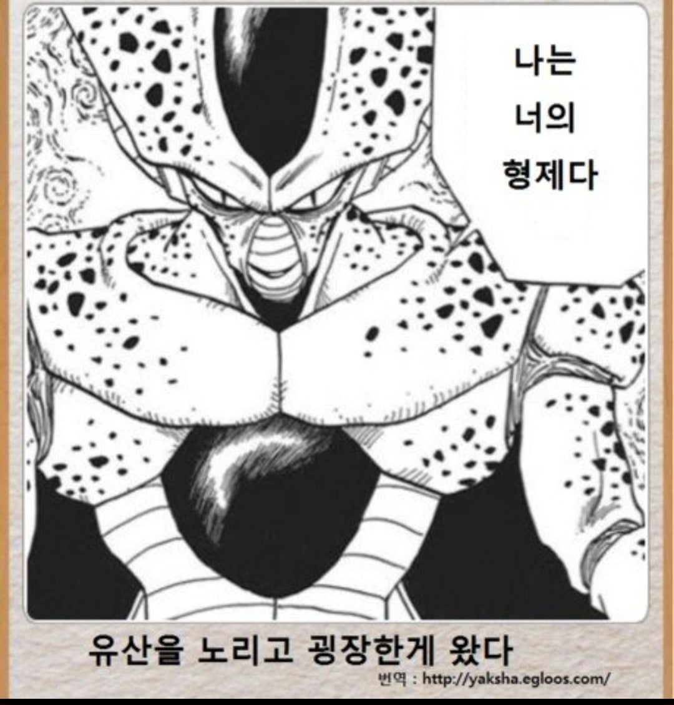

부모님께서 엄청난 유산을 남기고 돌아가셨다. 그리고
댓글
반반 하실까요..?
상반신/하반신
좌반신/우반신
어떻게 반반하는 것이 좋을지 골라봐 동생아
반반치킨으로 만들어달라고?
와 형ㅠㅠ
형이 지금 좀 비루하셔서 그렇지 나는 끝없는 잠재력이 느껴진다
열받으면 자폭 하는 멘헤라형 ㄷㄷ
나는 삼촌이다 나에게 사업이 있다 그 돈을 나에게 다오
진짜요? 그러세요
빨대 꽂음
목표는 지구정복
이런시파 내가 인조인간이었다니 인간인줄 알았는데!
형님…?
바이야 셀이야